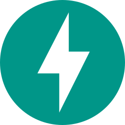

Data analysis
Explore, segment and structure data into readable indicators and useful business questions.
A CV-first profile built around the overlap between data analysis, marketing strategy, dashboarding and interface clarity.
Explore, segment and structure data into readable indicators and useful business questions.
Connect performance, audience behavior, acquisition logic and operational constraints.
Design reporting systems that prioritize hierarchy, reliability, adoption and decision flow.
Turn complex information into calm interfaces, clean narratives and scannable layouts.
Timeline view of roles, missions, tools and decision-oriented outcomes.
Banque Populaire AURA
Campaign analysis, customer segmentation and KPI structuring for business teams.
DCS Easyware
Administration of the Everwin tool, onboarding support and ad hoc reporting for commercial units.
My Serigraphy
Operational collaboration with leadership to improve business processes and online presence.
My Serigraphy / freelance activity
LinkedIn communication, weekly reporting, editorial calendars and responsive website creation.
Business, management, marketing and data education connected to work-study practice.
INSEEC Lyon
Data analytics, marketing management, business intelligence, dashboarding and performance analysis.
IUT Lumiere Lyon 2
Business administration with entrepreneurship, management of activities, organization and operational finance.
Grouped capabilities organized by category for quick CV scanning.
Core analytics, design and web tools used across portfolio projects.
 Python
Python
 SQL
Power BI
Excel
DAX
SQL
Power BI
Excel
DAX
 Teradata
Teradata
 Dataiku
Tableau
R / RStudio
Minitab
Dataiku
Tableau
R / RStudio
Minitab
 JavaScript
JavaScript
 TypeScript
TypeScript
 React
React
 HTML
HTML
 CSS
CSS
 Git
SQLite
Git
SQLite
 Figma
Figma
 Notion
Notion
 Miro
Miro
 Photoshop
Photoshop
 Airtable
Airtable

FastAPI PHP Mermaid Zapier n8n
n8n
Portfolio proof inside the CV: context, role, stack and outcome.
Analysis and prediction of customer churn in a banking context.
Interactive repository visualization by size, stack and portfolio role.
Multichannel performance cockpit for acquisition, conversion and lead quality.
Compact proof points and public-facing work.
25 repositories, 25 contributed projects and more than 2M tracked lines of code.
Static GitHub Pages portfolio designed as a readable professional system.
Dashboards, data models, KPI hierarchy and reporting workflows across school, work and personal projects.
Mapping, prompts, controls and quality checks for practical AI-assisted production chains.
Compact language comparison on practical CV dimensions.
| Skill | French | English |
|---|---|---|
| Speaking | Native | Professional |
| Writing | Native | Professional |
| Reading | Native | Advanced |
| Listening | Native | Professional |
| Vocabulary | Native | Professional |
Open to data, dashboarding, marketing analytics, interface design and workflow clarification projects.